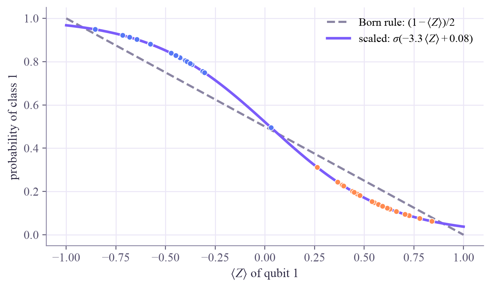
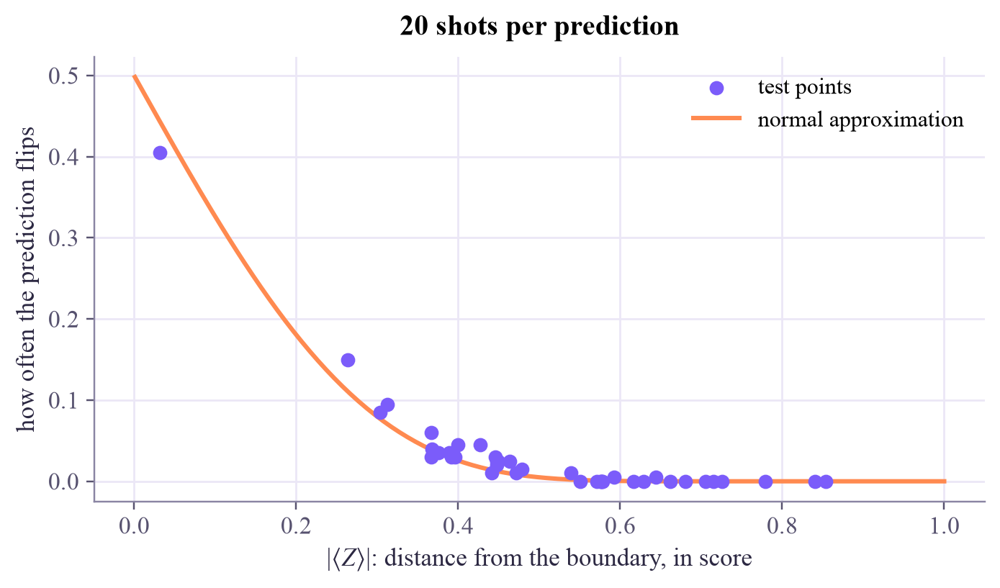

ready: 80 training points, 40 test points
Quantum Machine Learning
 about 15 min
about 15 min qml-w3d2.ipynb
qml-w3d2.ipynb
From measurements to predictions
A quantum classifier never hands you ⟨Z⟩, only shots. Turn counts into probabilities, train them with cross-entropy, read four classes from two qubits, and see where shots blur the boundary.
In this lesson you will
- Turn measurement counts into a class probability with the Born rule, and train it with cross-entropy
- Sharpen the probabilities with a classical scale, and read four classes from two qubits
- Predict which points finite shots will flip, and how the wobble shrinks like
Warm-up
1 minWhat the hardware actually returns

Monday's classifier predicted from the sign of , a number a simulator computes exactly. A real quantum computer returns something humbler: a list of 0s and 1s, one per shot. Today we go all the way from those bits to a prediction you can trust and a probability you can train.
Big idea
4 minCounts, probabilities and losses
From counts to a probability. Run the circuit times and count how often qubit 1 reads 1: out of . That fraction estimates a probability the Born rule already defines:
So a quantum classifier comes with a probability built in, and we can train it with cross-entropy, the loss of logistic regression (ML week 3), instead of Monday's squared error.
A classical scale. The circuit's rarely reaches , so these probabilities stay timid: on XOR they never get beyond 0.93. Two classical numbers fix that: , with a scale and a shift trained along with the circuit. The boundary stays where it was, but the confidence sharpens: the test cross-entropy drops from 0.29 to 0.19. This is the smallest possible hybrid model, and tomorrow's lesson grows it.
More qubits, more classes. Measure both qubits and the Born rule gives four probabilities, one for each bitstring 00, 01, 10 and 11, already adding up to 1: a four-class classifier without a softmax. Each of them is the expectation value of a projector such as , so the parameter-shift rule still gives their gradients.
Shots. With shots, the estimate of wobbles by about
which near the boundary is 0.32 for 10 shots and 0.1 for 100. Points far from the boundary don't care. Points close to it can flip from one measurement to the next, and halving the wobble costs four times the shots.
Counts estimate the Born-rule probability : train it with cross-entropy, sharpen it with a classical scale, read more classes from more bitstrings, and expect shots to blur only the points near the boundary.
Play
3 minMeasure the classifier
This classifier was trained on XOR when the page loaded, just like Monday's. Now it's measured the way hardware would do it: a number of shots per point, a count of 1s, an estimate of , a prediction. Tap any point to see its shots.
Try this
With 10 shots, press Measure again a few times: the stars (predictions the shots changed) jump around, but almost only inside the gray zone. Tap the point closest to the boundary and watch its counts swing. Then switch to 100 and 1,000 shots: each time the gray zone gets about 3 times thinner, because .
Code
3 minReadouts in Qiskit
The notebook for this lessonEvery code cell below, with what it printed, is in
qml-w3d2.ipynb. To change the code and run it yourself, open the notebook in Google Colab (free, in your browser) or download it for your own Jupyter.import numpy as np
from qiskit import QuantumCircuit, ClassicalRegister
from qiskit.circuit import ParameterVector
from qiskit.quantum_info import SparsePauliOp
from qiskit.primitives import StatevectorEstimator, StatevectorSampler
from sklearn.preprocessing import MinMaxScaler
from sklearn.model_selection import train_test_split
def classifier(layers=2):
"""Yesterday's circuit: encode once, then trainable rotations and a CNOT in every layer."""
x, w = ParameterVector("x", 2), ParameterVector("w", 4 * layers)
qc = QuantumCircuit(2)
qc.ry(x[0], 0)
qc.ry(x[1], 1)
for l in range(layers):
qc.ry(w[4 * l], 0)
qc.rz(w[4 * l + 1], 0)
qc.ry(w[4 * l + 2], 1)
qc.rz(w[4 * l + 3], 1)
qc.cx(0, 1)
return qc
estimator = StatevectorEstimator()
def run(circuit, observables, X, weight_sets):
"""Expectation values of several observables: shape (observables, weight sets, points)."""
rows = np.array([np.concatenate([W, x]) for W in weight_sets for x in X])
obs = np.empty((len(observables), 1), dtype=object) # a column of observables, broadcast over the rows
for i, o in enumerate(observables):
obs[i, 0] = o
evs = estimator.run([(circuit, obs, rows)]).result()[0].data.evs
return evs.reshape(len(observables), len(weight_sets), len(X))
def values_and_jacobian(circuit, observables, X, W):
"""Values at W, and their derivatives for every weight by the parameter-shift rule, in one batch."""
sets = [W]
for k in range(len(W)):
for shift in (np.pi / 2, -np.pi / 2):
Wk = W.copy()
Wk[k] += shift
sets.append(Wk)
V = run(circuit, observables, X, sets)
return V[:, 0], (V[:, 1::2] - V[:, 2::2]) / 2 # (observables, points), (observables, weights, points)
def xor_data(n=120, seed=0):
rng = np.random.default_rng(seed)
corner = rng.choice([-1, 1], size=(n, 2))
return corner + 0.35 * rng.normal(size=(n, 2)), (corner[:, 0] * corner[:, 1] < 0).astype(int)
X, y = xor_data()
X_train, X_test, y_train, y_test = train_test_split(X, y, test_size=40, random_state=0, stratify=y)
scaler = MinMaxScaler((-np.pi / 2, np.pi / 2)).fit(X_train)
X_train, X_test = scaler.transform(X_train), scaler.transform(X_test)
circuit, Z1 = classifier(), SparsePauliOp("ZI") # ⟨Z⟩ of qubit 1, as yesterday
print("ready:", len(X_train), "training points,", len(X_test), "test points")What it printed in the notebook
def cross_entropy(p, y):
p = np.clip(p, 1e-9, 1 - 1e-9)
return -np.mean(y * np.log(p) + (1 - y) * np.log(1 - p))
def train_born(epochs=60, lr=0.3, seed=0):
W = 0.6 * np.random.default_rng(seed).normal(size=8)
for epoch in range(epochs):
f, J = values_and_jacobian(circuit, [Z1], X_train, W)
p = np.clip((1 - f[0]) / 2, 1e-9, 1 - 1e-9)
dL_df = -(p - y_train) / (2 * p * (1 - p) * len(p)) # chain rule through p = (1 - f) / 2
W = W - lr * (J[0] @ dL_df)
if epoch % 20 == 0:
print(f"epoch {epoch:2d}: cross-entropy {cross_entropy(p, y_train):.3f}")
return W
W_born = train_born()
p_born = (1 - run(circuit, [Z1], X_test, [W_born])[0, 0]) / 2
print(f"test accuracy {np.mean((p_born > 0.5) == y_test):.3f}, test cross-entropy {cross_entropy(p_born, y_test):.3f}")
print("most confident probabilities:", p_born.min().round(3), "and", p_born.max().round(3))What it printed in the notebook
epoch 0: cross-entropy 0.887 epoch 20: cross-entropy 0.282 epoch 40: cross-entropy 0.276 test accuracy 0.975, test cross-entropy 0.288 most confident probabilities: 0.077 and 0.928
sigmoid = lambda z: 1 / (1 + np.exp(-z))
def train_scaled(epochs=60, lr=0.3, seed=0):
W, a, b = 0.6 * np.random.default_rng(seed).normal(size=8), 2.0, 0.0 # a = 2 matches the Born slope at ⟨Z⟩ = 0
for epoch in range(epochs):
f, J = values_and_jacobian(circuit, [Z1], X_train, W)
p = sigmoid(-a * f[0] + b)
dz = (p - y_train) / len(p) # cross-entropy's gradient for the sigmoid's input
W, a, b = W - lr * (J[0] @ (-a * dz)), a - lr * np.sum(-f[0] * dz), b - lr * np.sum(dz)
return W, a, b
W_s, a, b = train_scaled()
f_test = run(circuit, [Z1], X_test, [W_s])[0, 0]
p_scaled = sigmoid(-a * f_test + b)
print(f"learned scale a = {a:.2f}, shift b = {b:.2f}")
print(f"test accuracy {np.mean((p_scaled > 0.5) == y_test):.3f}, test cross-entropy {cross_entropy(p_scaled, y_test):.3f}")
import matplotlib.pyplot as plt
z = np.linspace(-1, 1, 200)
fig, ax = plt.subplots(figsize=(6.2, 3.6), layout="constrained")
ax.plot(z, (1 - z) / 2, color="#8a85a3", lw=2, ls="--", label=r"Born rule: $(1 - \langle Z\rangle)/2$")
ax.plot(z, sigmoid(-a * z + b), color="#7b5cfa", lw=2.4, label=fr"scaled: $\sigma(-{a:.1f}\,\langle Z\rangle {b:+.2f})$")
ax.scatter(f_test, sigmoid(-a * f_test + b), c=np.where(y_test == 0, "#ff8a50", "#5577f5"), s=26, zorder=3, edgecolors="white", linewidths=0.6)
ax.set_xlabel(r"$\langle Z\rangle$ of qubit 1")
ax.set_ylabel("probability of class 1")
ax.legend(frameon=False, loc="upper right")
plt.show()What it printed in the notebook
learned scale a = 3.32, shift b = 0.08 test accuracy 0.975, test cross-entropy 0.190

measured = circuit.copy()
measured.add_register(ClassicalRegister(1, "c"))
measured.measure(1, 0) # only qubit 1 is read
sampler = StatevectorSampler(seed=np.random.default_rng(1))
rows = np.array([np.concatenate([W_s, x]) for x in X_test])
exact = np.where(f_test < 0, 1, 0)
for shots in (10, 100, 1000):
accs, flips = [], []
for repeat in range(20):
ones = sampler.run([(measured, rows)], shots=shots).result()[0].data.c.bitcount().sum(axis=-1)
estimate = 1 - 2 * ones / shots # ⟨Z⟩ estimated from the counts
predicted = np.where(estimate < 0, 1, np.where(estimate > 0, 0, np.random.default_rng(repeat).integers(0, 2, len(estimate))))
accs.append(np.mean(predicted == y_test))
flips.append(np.sum(predicted != exact))
print(f"{shots:5d} shots: accuracy {np.mean(accs):.3f} ± {np.std(accs):.3f}, predictions that differ from the exact ones: {np.mean(flips):.1f} of {len(y_test)}")
print(f"exact ⟨Z⟩: accuracy {np.mean(exact == y_test):.3f}")What it printed in the notebook
10 shots: accuracy 0.916 ± 0.037, predictions that differ from the exact ones: 3.2 of 40 100 shots: accuracy 0.986 ± 0.012, predictions that differ from the exact ones: 0.5 of 40 1000 shots: accuracy 0.981 ± 0.011, predictions that differ from the exact ones: 0.2 of 40 exact ⟨Z⟩: accuracy 0.975
def projector(b0, b1):
s0, s1 = (-1) ** b0, (-1) ** b1 # |b⟩⟨b| = (I ± Z)/2 on each qubit
return SparsePauliOp.from_list([("II", 0.25), ("IZ", 0.25 * s0), ("ZI", 0.25 * s1), ("ZZ", 0.25 * s0 * s1)])
projectors = [projector(k // 2, k % 2) for k in range(4)] # class k ↔ qubit 0 reads k // 2, qubit 1 reads k % 2
rng = np.random.default_rng(0)
sign = rng.choice([-1, 1], size=(160, 2))
X4 = sign + 0.35 * rng.normal(size=(160, 2))
y4 = 2 * (sign[:, 0] > 0) + (sign[:, 1] > 0) # four quadrants, four classes
X4_train, X4_test, y4_train, y4_test = train_test_split(X4, y4, test_size=60, random_state=0, stratify=y4)
scaler4 = MinMaxScaler((-np.pi / 2, np.pi / 2)).fit(X4_train)
X4_train, X4_test = scaler4.transform(X4_train), scaler4.transform(X4_test)
W4 = 0.6 * np.random.default_rng(0).normal(size=8)
idx = np.arange(len(y4_train))
for epoch in range(60):
P, J = values_and_jacobian(circuit, projectors, X4_train, W4) # P: (4 classes, points)
p_true = np.clip(P[y4_train, idx], 1e-9, 1)
W4 = W4 - 0.5 * (-(J[y4_train, :, idx] / p_true[:, None]).mean(axis=0)) # gradient of -mean log p(true class)
if epoch % 20 == 0:
print(f"epoch {epoch:2d}: cross-entropy {-np.mean(np.log(p_true)):.3f}")
P_test = run(circuit, projectors, X4_test, [W4])[:, 0]
print(f"test accuracy {np.mean(P_test.argmax(axis=0) == y4_test):.3f}")
print("first test point: probabilities", P_test[:, 0].round(3), "sum", P_test[:, 0].sum().round(3), "true class", y4_test[0])What it printed in the notebook
epoch 0: cross-entropy 2.220 epoch 20: cross-entropy 0.304 epoch 40: cross-entropy 0.304 test accuracy 0.983 first test point: probabilities [0.094 0.845 0.005 0.056] sum 1.0 true class 1
Look closely at cell 4: with 100 and 1,000 shots, the accuracy even beats the exact model's. The one test point the exact model gets wrong sits right on the boundary, and some measurements push it to the correct side. That's luck, not skill, which is why the cell also counts the predictions that differ from the exact ones: about 3 of 40 with 10 shots, fewer than 1 with 100 or more.
Your turn
2 minYour turn: which points flip?
Measure the trained classifier with 20 shots per point, 200 times over. For each test point, how often does the prediction differ from the exact one? Plot that flip rate against .
shots, repeats = 20, 200
p1 = (1 - f_test) / 2 # chance that qubit 1 reads 1, per test point
rng = np.random.default_rng(0)
# TODO: draw rng.binomial(shots, p1, size=(repeats, len(p1))) counts of ones, estimate ⟨Z⟩ = 1 - 2·ones/shots,
# compare its sign with the exact one, and plot each point's flip rate against np.abs(f_test)Need a hint?
rng.binomial(shots, p1, size=(repeats, len(p1))) gives a table of counts of 1s, and 1 - 2 * ones / shots turns it into estimates of . Compare their signs with the exact predictions and average over the repeats.
Show a solution
shots, repeats = 20, 200
p1 = (1 - f_test) / 2
rng = np.random.default_rng(0)
ones = rng.binomial(shots, p1, size=(repeats, len(p1)))
estimate = 1 - 2 * ones / shots
tie = rng.integers(0, 2, size=estimate.shape) # a 10-10 split is a coin toss
predicted = np.where(estimate < 0, 1, np.where(estimate > 0, 0, tie))
flip_rate = np.mean(predicted != exact, axis=0)
from scipy.stats import norm
zz = np.linspace(0.001, 1, 200)
fig, ax = plt.subplots(figsize=(6.2, 3.6), layout="constrained")
ax.scatter(np.abs(f_test), flip_rate, color="#7b5cfa", s=30, zorder=3, label="test points")
ax.plot(zz, norm.cdf(-zz * np.sqrt(shots) / np.sqrt(1 - zz ** 2 + 1e-12)), color="#ff8a50", lw=2, label="normal approximation")
ax.set_xlabel(r"$|\langle Z\rangle|$: distance from the boundary, in score")
ax.set_ylabel("how often the prediction flips")
ax.set_title("20 shots per prediction")
ax.legend(frameon=False)
plt.show()
print(f"points that flip more than 10% of the time: {np.sum(flip_rate > 0.1)} of {len(flip_rate)}")
print("They are exactly the points with small |⟨Z⟩|: shots only matter near the boundary.")What it printed in the notebook

points that flip more than 10% of the time: 2 of 40 They are exactly the points with small |⟨Z⟩|: shots only matter near the boundary.
The orange curve is the normal approximation: a prediction flips with probability about , where is the area under the bell curve to the left.
Check yourself
1 minQuick check
Question 1 of 3
Qubit 1 reads 1 in 30 of 100 shots. What is the estimated , and the predicted class?
Question 2 of 3
To halve the wobble of an estimated , how many shots do you need?
Question 3 of 3
Two qubits are measured to tell four classes apart. Where do the four class probabilities come from?
Wrap-up
1 minToday in one sentence
Research link
On hardware, training pays the same shot bill: every gradient is itself estimated from shots, so training is noisy gradient descent. How many shots to spend, and on which circuits, is an active research question, with optimizers that adapt the number of shots as training goes.
Go deeper (optional)
Schuld and Petruccione, Machine Learning with Quantum Computers (Springer, 2nd edition, 2021), the chapter on variational circuits as machine-learning models. On spending shots wisely: Kübler, Arrasmith, Cincio and Coles, "An adaptive optimizer for measurement-frugal variational algorithms" (Quantum, 2020).
Tomorrow: hybrid models, with PyTorch doing the bookkeeping.

That's the lesson!
Tap the button to save it. Short and steady wins.
Marked by mistake? Undo